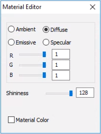
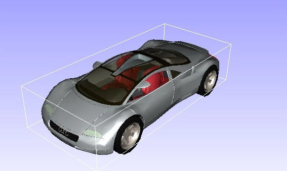
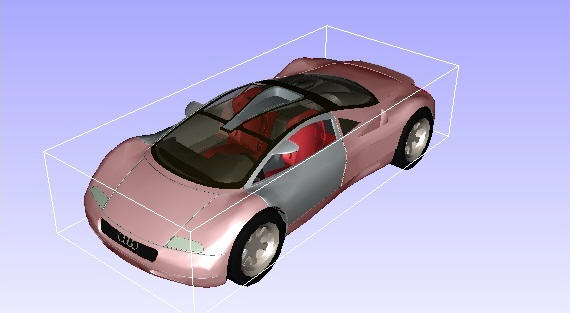
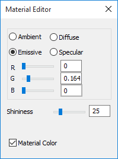

Part Color
The Part Color option allows users to edit appearance properties of a part.
Users can modify the following properties in the Part Color Panel.
- Ambient
- Diffuse
- Emissive
- Specular
- Shininess and
- Material Color
All property values vary in the range of 0 to 1
Part Color Panel
To bring up the Part Color panel,
- Go to Product Explorer using Edit | Product Explorer in context menu.
- Select Part List tab
- Click Part Color button

The various fields and options found in the Material Editor panel for Part color are explained below
| Ambient | Specifies the amount of light a surface should reflect. |
| Diffuse | Specifies the amount of light the surface reflects. It depends on the angle of the surface with the source light. |
| Emissive | Specifies the amount of light produced by a glowing object. |
| Specular | Specifies the highlight color for an object. |
| Shininess | Specifies the degree of surface shine. Value ‘0’ refers to a rough surface and ‘1’ refers to the most polished surface. |
| Material Color | Check this material color box to apply default material color on the selected parts. |
Steps to apply or remove material color
Double click on a part of a model to open the context menu.

Click Display Mode | Color Plot.
It applies or removes material color.
Steps to change a part’s material color
Load a CAX model.
Select a part by double clicking on it. This highlights the part with its bounding box.
Go to Product Explorer| Part List
Click Part Color
Check the Material Color checkbox to apply material color.

Change the Ambient color using slider controls and notice the change in part concurrently.

Change the Diffuse color.
Change the Emissive color.


Change the Specular color.

Change the Shininess.